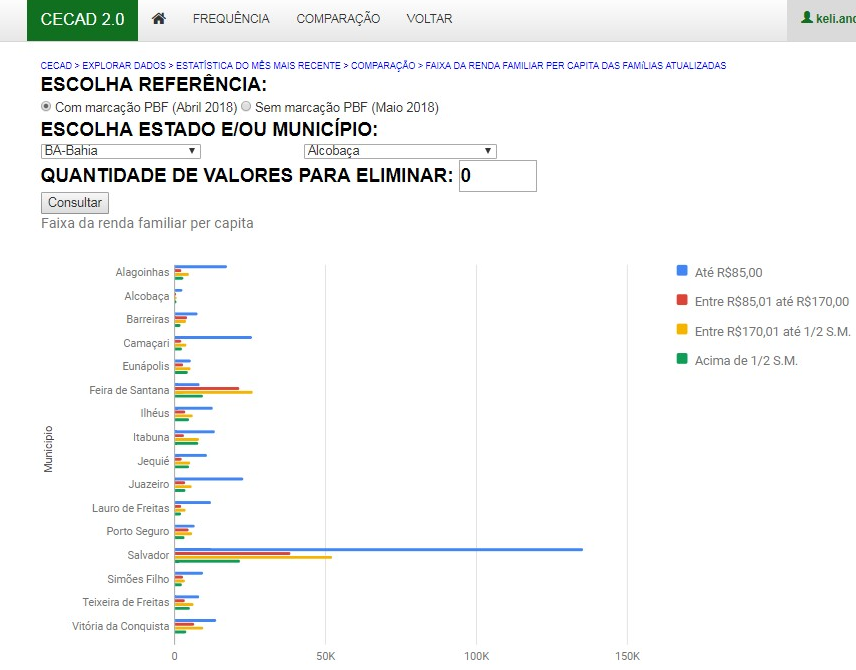
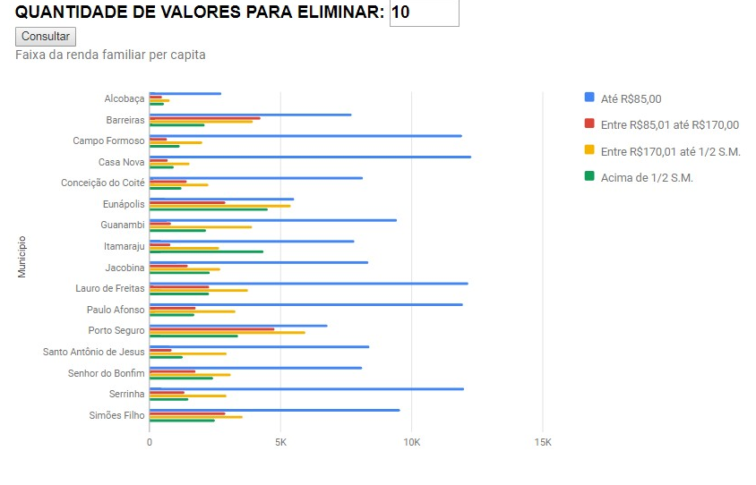
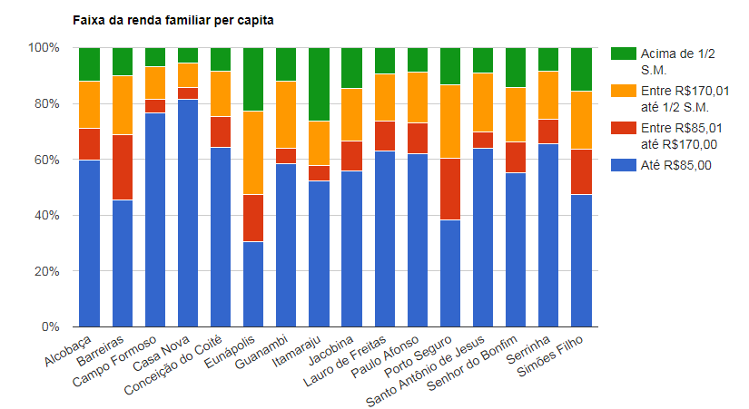

Comparação¶
Se você selecionar a opção ‘Comparação’, você encontrará as mesmas variáveis da opção ‘Frequência’, tanto para dados de família quanto para dados de pessoa. Mas nessa funcionalidade, você poderá comparar os dados do seu município com os dados dos outros municípios do seu estado.
Caso seu município seja pequeno, talvez seja interessante retirar os maiores municípios do seu estado da comparação, assim você compara o seu município com outros com realidade mais parecida. Para isso, basta indicar a “Quantidade de valores para eliminar”. Nos dois gráficos abaixo, vemos como fica a comparação de Alcobaça (BA) com os 15 maiores municípios do estado da Bahia e a mesma comparação retirando os 10 maiores municípios do estado.
Para retirar os maiores valores, basta indicar a quantidade de municípios a serem excluídos da comparação, digitando essa quantidade na opção: “Quantidade de valores para eliminar”. É possível retirar até 10 valores da comparação:
Esses gráficos destacam a comparação considerando o número de famílias de cada faixa de renda nos municípios. Mas você pode também comparar a proporção de famílias em cada faixa de renda. O gráfico abaixo apresenta a comparação:
A partir dessas comparações, é possível identificar municípios com perfil de famílias próximo ao do seu município e ver quais ações são realizadas para entrar em contato com as famílias, por exemplo. A partir dos gráficos acima, é possível perceber que Campo Formoso e Casa Nova têm um número de famílias semelhante com uma distribuição parecida entre as diferentes faixas de renda.